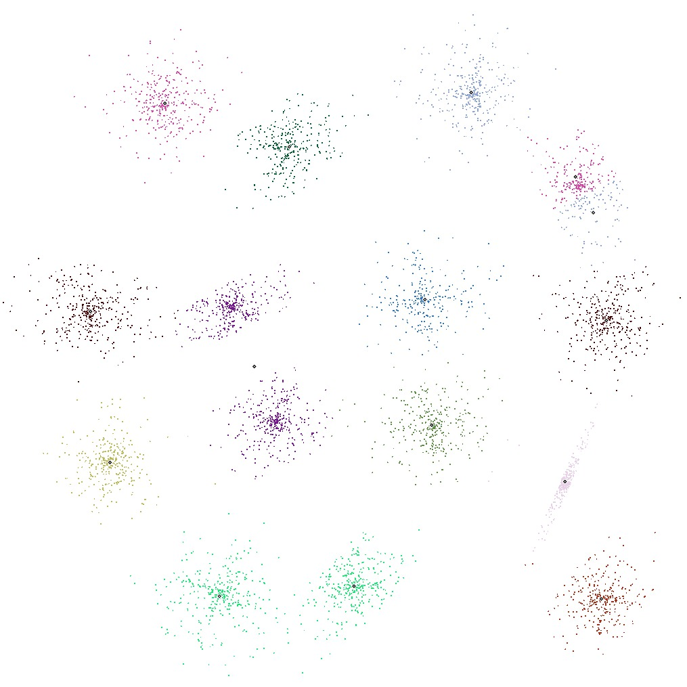
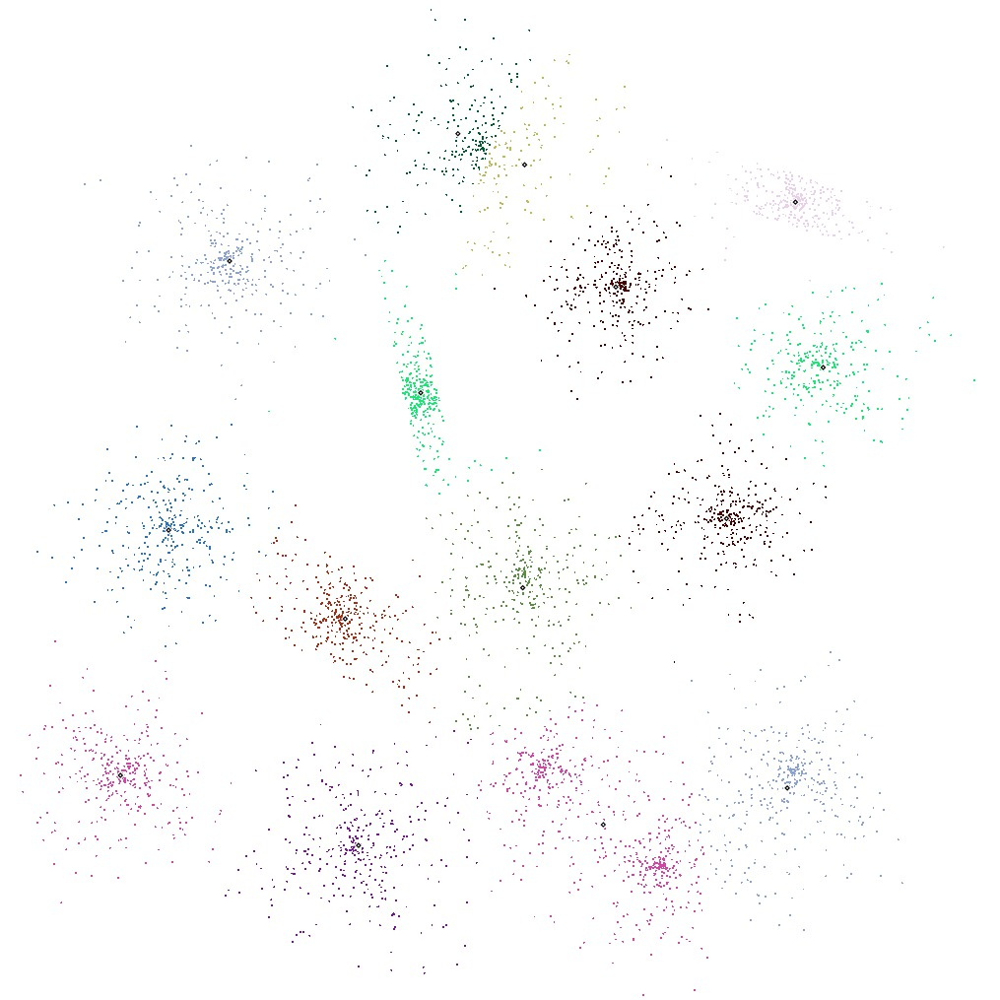
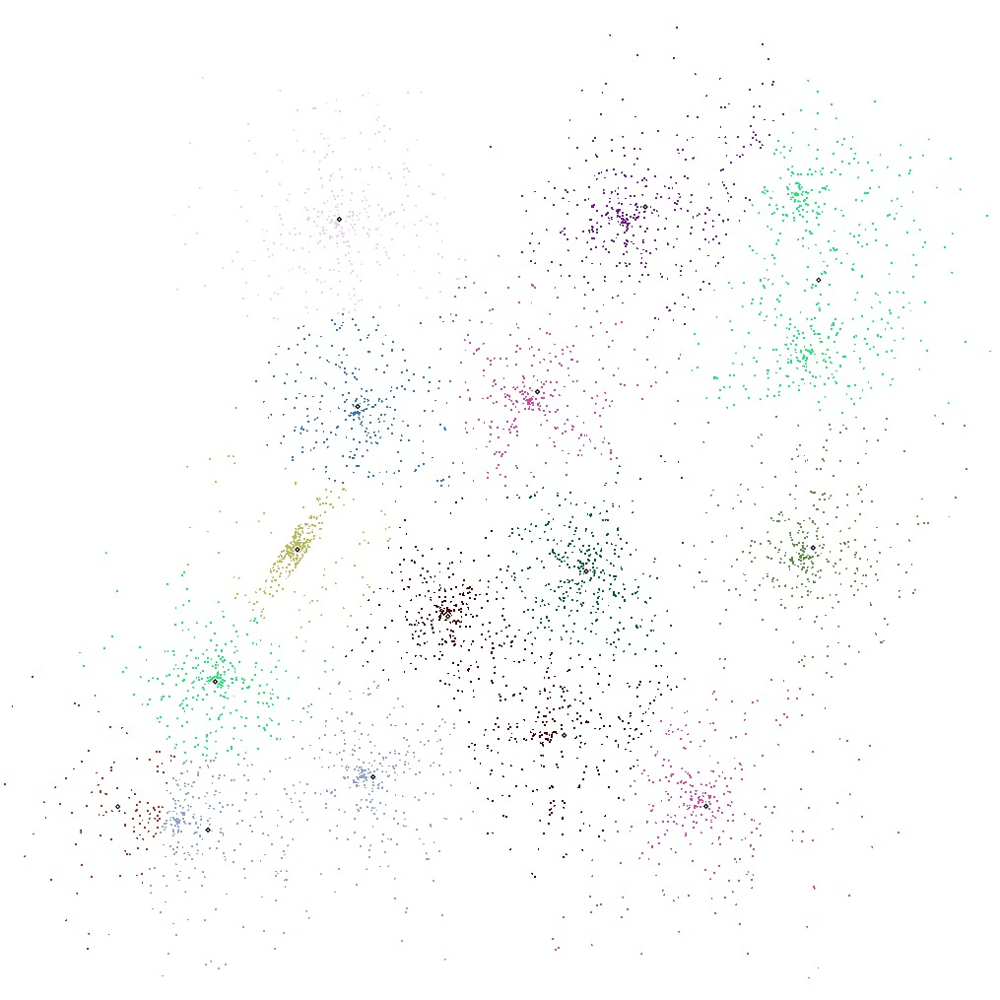
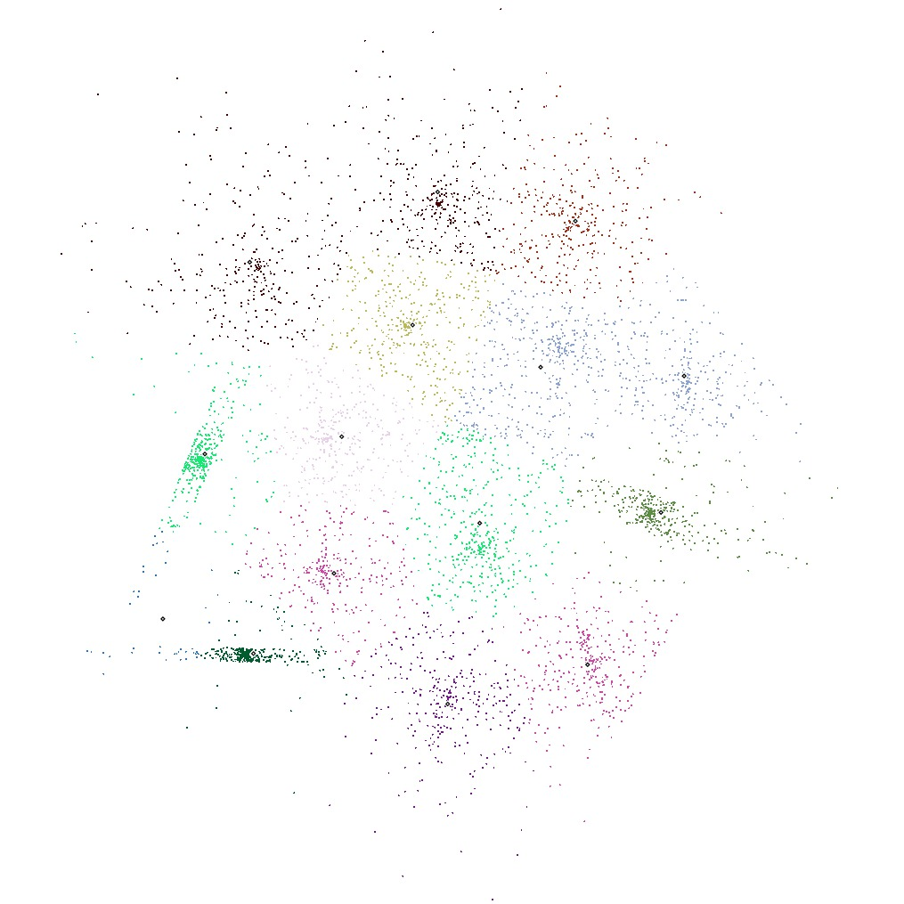

S1
S2
S3
S4
S-sets:
Synthetic 2-d data with N=5000 vectors and k=15 Gaussian clusters with different degree of cluster overlapping .
Introduction
k-means++ clustering a classification of data, so that points assigned to the same cluster are similar. It is identical to the K-means algorithm, except for the selection of initial conditions. I implement k-means++ clustering algorithm by using C++. The implemented open source code can be used freely. If you have any questions , please conected
y.j.zhou.g@gmail.com. The implemented code including the following features.
Features
Standard k-means clustering methed
Standard k-means clustering methed with parallel acceleratation
k-means++ clustering methed
k-means++ clustering methed with parallel acceleratation
Export the result as SVG format
Export the result as EPS format
Code and Dataset
Download data set:
Clustering benchmark datasets
Download code
[.rar]
[Github]
References
ARTHUR, David; VASSILVITSKII, Sergei. k-means++: The advantages of careful seeding. In: Proceedings of the eighteenth annual ACM-SIAM symposium on Discrete algorithms. Society for Industrial and Applied Mathematics, 2007. p. 1027-1035.
FRÄNTI, Pasi; VIRMAJOKI, Olli. Iterative shrinking method for clustering problems. Pattern Recognition, 2006, 39.5: 761-775.